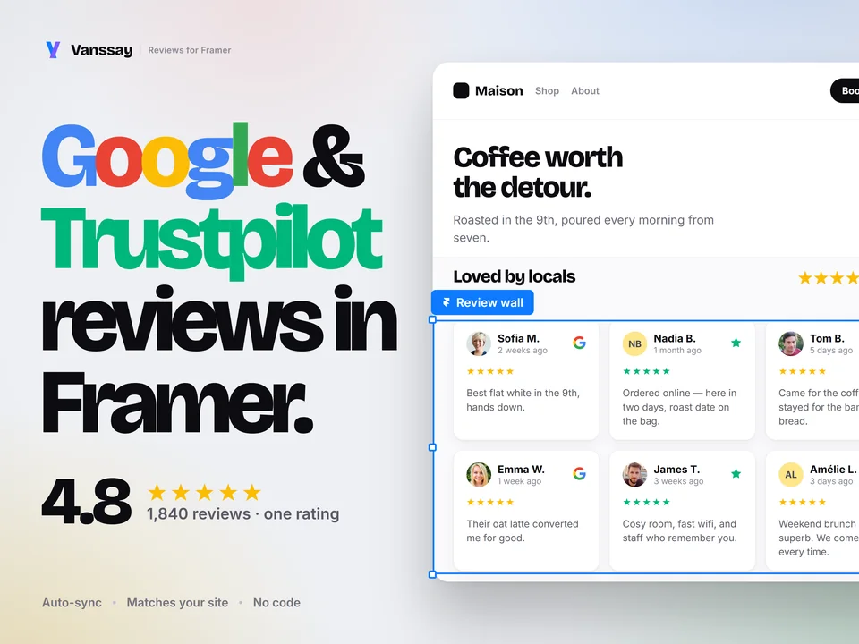
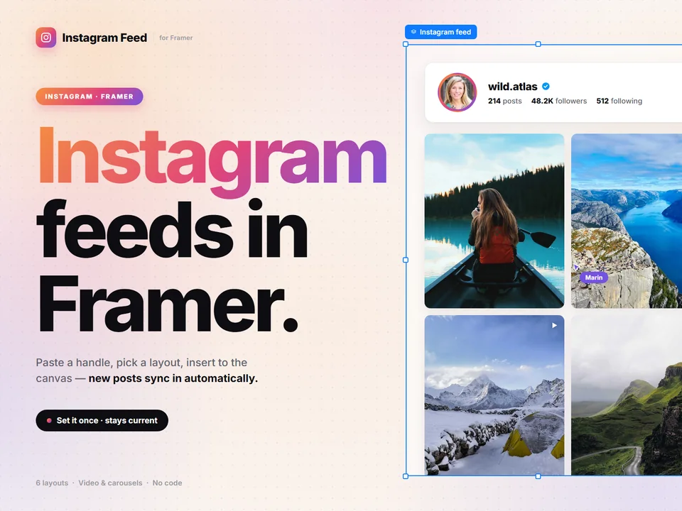

Framer plugins · by Marin de Vanssay
Reviews, Instagram feeds, country blocking and geo-redirects for your Framer site. New reviews and posts sync on their own, and rule changes go live without a republish.
Reviews plugin · Google + Trustpilot in one rating
Live right now
Read from the Reviews plugin's production database when this page loaded.
Plugins
Each one has a free plan you can keep, not a trial.

Google and Trustpilot in one combined rating. 25 layouts, 57 card styles.

Paste a handle, pick a layout. New posts sync on their own, on Framer or any site.
Block countries, VPNs and proxies, with an access screen that matches your site.
Redirect by country, region, language or device, or suggest it with a banner.
Who's behind this
I'm Marin, an engineering student in Nantes. I make these plugins, run the servers they live on and answer every support email myself. When something breaks, you're writing to the person who can fix it.
Start on the free plan. Upgrade only when your site needs more.